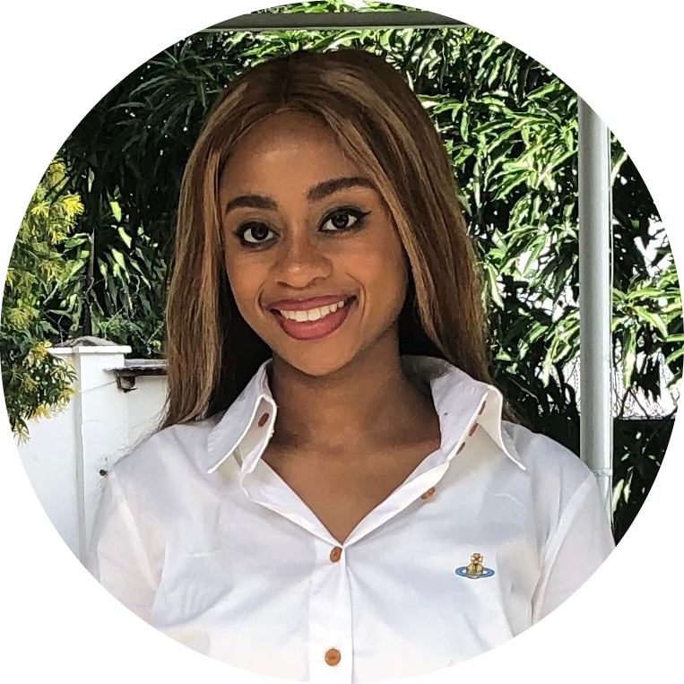

Tiffany Filawo

Intro: I am looking to use my strong analytical skills and varied programming knowledge to solve the world's complex problems.
EDUCATION
Rensselaer Polytechnic Institute(website), Troy, NY, Graduation date: May 2023
Bachelor of Science in Industrial and Management Engineering, GPA: 3.55/4.0
and Information Technology Web Science
Lake Forest Academy(website), Lake Forest, IL, Graduation date: June 2019
High School Diploma GPA: 3.8/4.0
Accomplishments
- National Society of Leadership and Success (Fall 2020)
- RPI Dean’s Honor List (Spring 2020)
- National Spanish Exam: Bronze Medalist (May 2016), Silver Medalist (May 2019)
- National Name Exchange (Fall 2020)
- Recipient of the Garnett D. Baltimore Scholarship (Fall 2019)
EXPERIENCE
IBM Global Financing(website) | Armonk, NY | Offering Development Intern (June 2021-August 2021)
- Produced templates for five market offerings including: Ecosystem Payment Plan, Purchase of Receivables,
Enterprise License Agreements (ELA), Passport Advantage Payment Plan for ELA, and Soft Lease for a Worldwide
Offering Portfolio. Templates published on IGF’s Worldwide Offering Publisher Page for internal, global clients
to conveniently view IGF offerings
- Collected research on how IGF’s 14 top-market competitors used blockchain to create a presentation for eight
executives to approve IGF’s Blockchain Ecosystem project, allowing IGF to create a network with 100+ business partners
and IBM, containing smart contracts, reduced credit risk, and guaranteed purchase of receivables
- Member of cross-functional team to modify IGF’s Solutions EPP to provide IBM clients an easy-to-execute payment plan
that enables them to sign multi-year deals
- Participant in IBM Bee Innovative Intern Challenge and coded interface using React for website providing food suggestions
for nutrient deficiencies in pregnant women to solve generational, world hunger
Malalika(website) | DR Congo | Youth Ambassador and Development Assistant (November 2017-Present)
- Conducting research for a higher education initiative project where 90+ global institutions and scholarships are being analyzed
for the Malaika School’s first graduating class
- Organize and write sections of newsletters in a team of 10 to mail globally to supporters, donors, and colleagues.
- Research and send inspiring stories about successful Black individuals in various fields in STEM, entertainment,
entrepreneurship, etc. to inspire girls at the Malaika School.
- Engaged social media audience by creating captions with strategically chosen hashtags for posts about students
COURSEWORK
Optimization Algorithms and Applications Fall 2021
- Implementing Python to design, analyze, and apply algorithms to solve combinatorial optimization problems
Data Structures Spring 2021
- Designed and used efficient data structures to construct C++ programs to solve complex, real-life problems
LEADERSHIP
Black Students' Alliance
President (August 2020 – Present)
- Act as chief spokesperson for the Alliance on campus including The Rensselaer Black & LatinX Student Coalition and ensure the goals
and purpose of the organization are carried out
- Responded to post-covid circumstances by reorganizing Executive Board of 13 so club officers have a supporting committee member, and enforce consistent
communication to execute tasks efficiently and stay proactive
Vice President (August 2020 – Present)
- Orchestrate and delegate work among 12 executive board members to execute programs and events.
- Implementing a B.O.S.S. (Black Owned Success Series) Event by getting numerous notable business owners
to speak before 50+ general body members about their journeys to success.
National Society of Black Engineers (NSBE)
- Organize the 43rd Annual NSBE/SHPE Career Fair Corporate Reception, hosting 100+ registered companies
SKILLS
- Computer Software: Java, Python, SiemensNX (CAD), LABVIEW, ExcelOM, Microsoft Office, LoggerPro,
Maple, R Studio
- Language: English, Spanish, French, Lingala